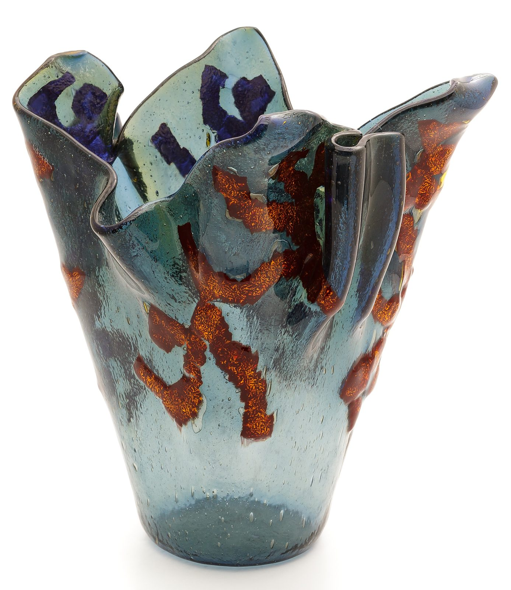
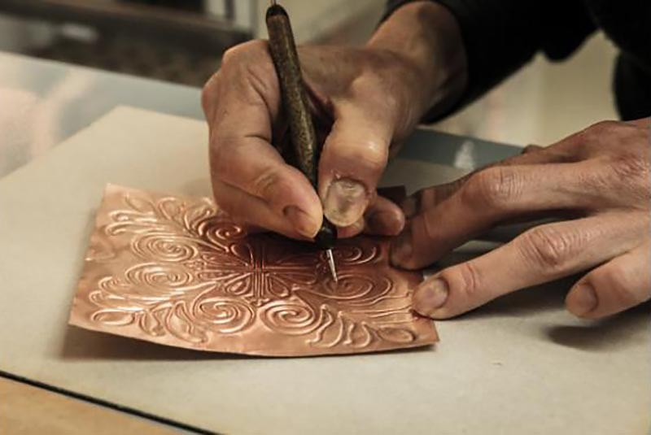
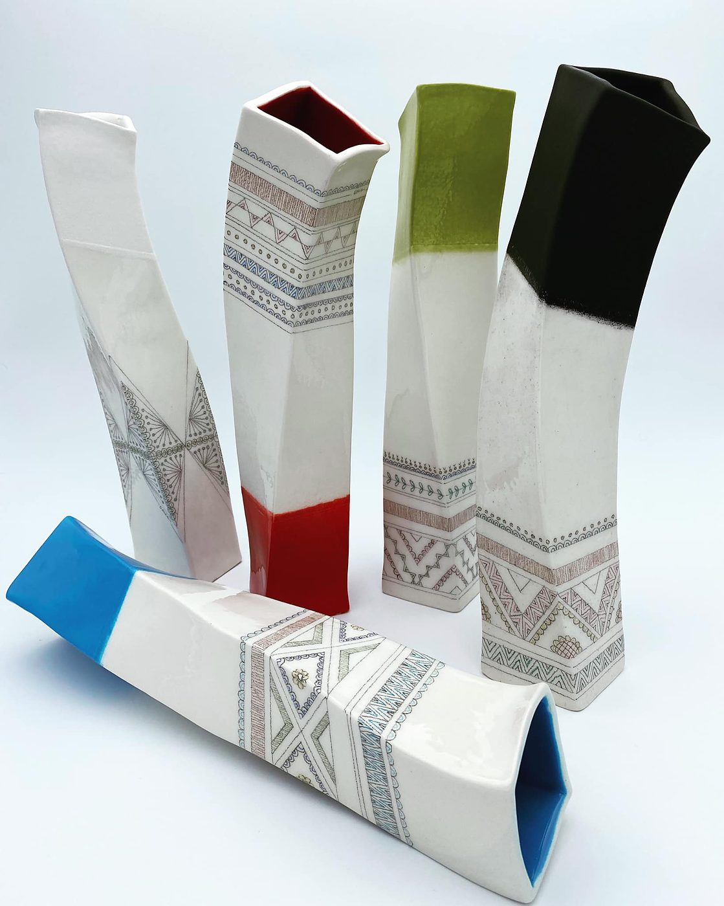
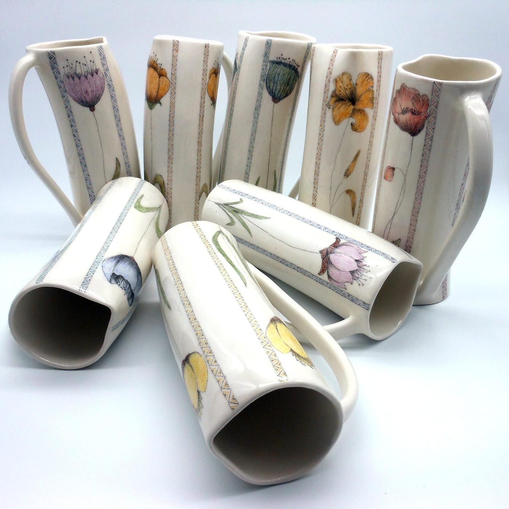
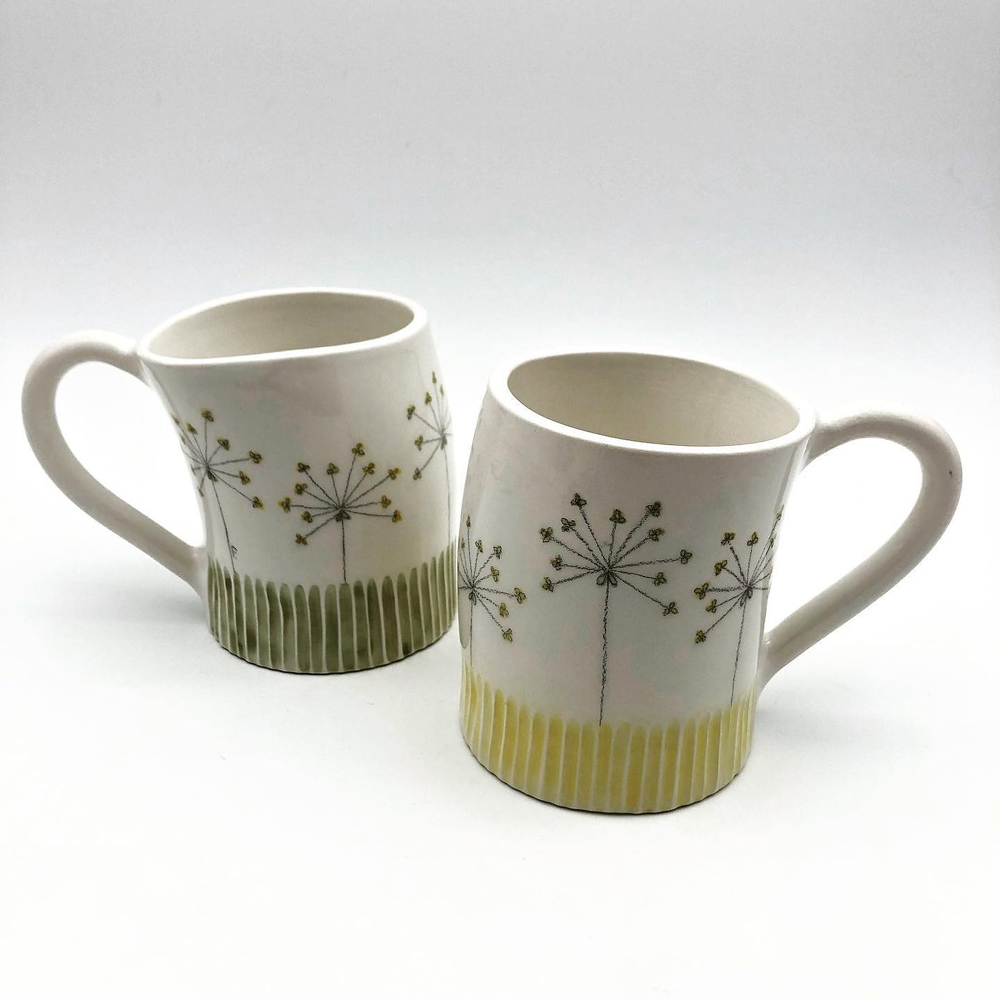
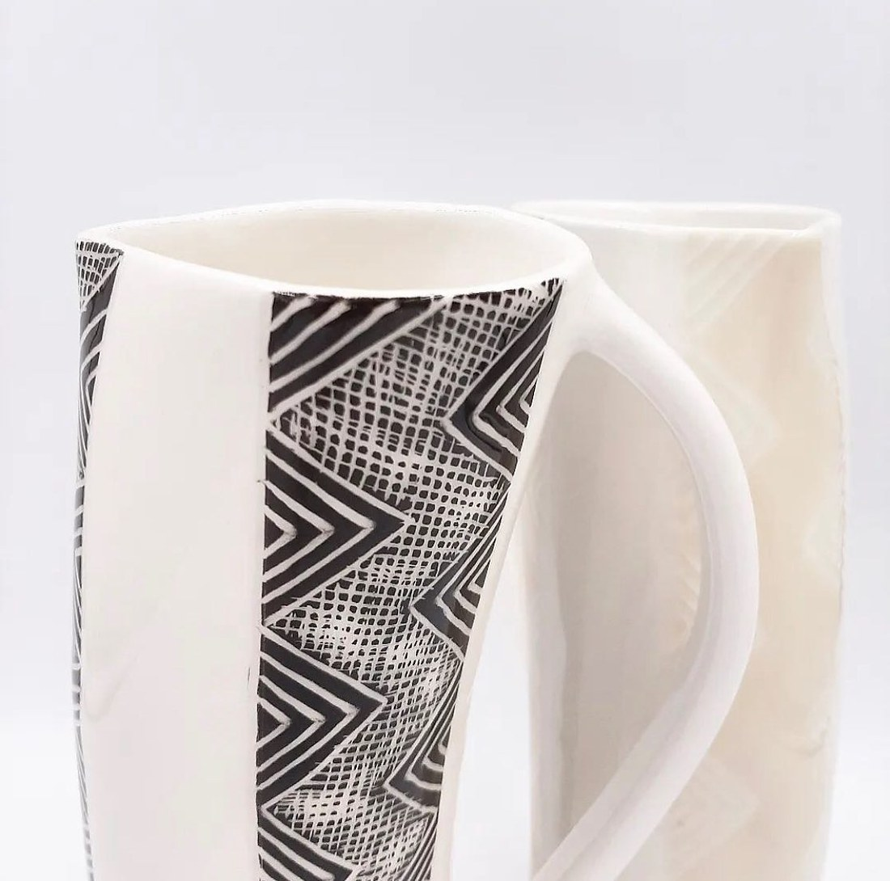
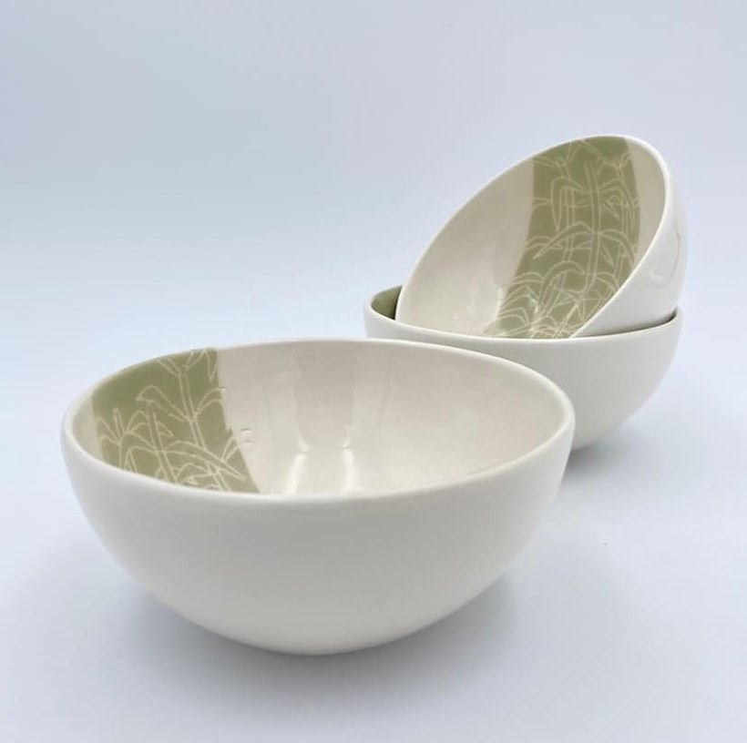
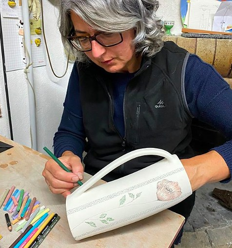

1999La ceramica
«Nel 1999 inizio l'avventura nel mondo della ceramica, aprendo a Cagliari il mio laboratorio.»
Quartu Sant'Elena · Sardegna
Ceramiche e vetro artistico
Laboratorio «Artemisia», dal 1999.
Vetrofusione e ceramica, con il rame lavorato a sbalzo e inglobato nel vetro.

Chi è
«Passione da sempre per arte e manualità.»
«Ho studiato al liceo artistico di Cagliari e in seguito un obiettivo, trasformare la passione in professione.»
«Il mio laboratorio è la mia casa, per questo ho voluto che fosse in mezzo al verde rilassante della campagna, ma a due passi dal mare e dalla città.»
«Dal 2006 vivo e lavoro a Quartu Sant'Elena.»
Le frasi sono riportate parola per parola dalla sua scheda sulla Fiera dell'Artigianato Artistico della Sardegna.
Il ritratto pubblicato sulla sua scheda della Fiera dell'Artigianato Artistico della Sardegna.
Dal 1999, tre scelte
«Nel 1999 inizio l'avventura nel mondo della ceramica, aprendo a Cagliari il mio laboratorio.»
«Ma la curiosità è forte, e la voglia di sperimentare mi spinge poi verso il vetro, un materiale leggero, trasparente e apparentemente fragile che mi ha dato grandi soddisfazioni.»
«Da qualche anno, però, la mia prima passione è tornata la protagonista della mia arte e ho ripreso con la lavorazione della ceramica, con la quale riesco ad esprimere a pieno la mia creatività.»
Il vetro
«La produzione di Simonetta Liscia è composta principalmente da una pregiata varietà di elementi d'illuminotecnica e di complementi d'arredo in vetro: lampadari, lampade da muro e da tavolo, vasi e piatti decorativi, si caratterizzano per le forme eleganti e per le preziose decorazioni in rame che l'artigiana realizza con procedure personalizzate.»
Dalla sua scheda nel registro regionale «Vetrine dell'Artigiano Artistico», che è anche la fonte dei nomi e delle descrizioni qui sotto.
Il rame
«Nel laboratorio si eseguono le tecniche della vetrofusione, della legatura a piombo, della lavorazione a lume, affiancate da procedure sperimentali che coinvolgono l'inserimento di decorazioni in lastra e filo di rame lavorato preliminarmente a sbalzo e ad intreccio.»
«…inglobando nel vetro lastre di rame che sagoma e lavora preliminarmente nella texture con effetti a sbalzo, ricercando procedure che mantengono ed esaltano il colore del metallo nella trasparenza del manufatto finito, catturando preziosità nella preziosità.»
Le due descrizioni sono riportate parola per parola dal registro regionale.

La lavorazione della lastra di rame, prima che entri nel vetro.
La ceramica
«Simonetta Liscia ha aperto il suo laboratorio “Artemisia” nel 1999. Ha iniziato realizzando lampade e complementi d'arredo in ceramica, acquisendo grande esperienza e manualità.»
Da Wellmade, il repertorio della Fondazione Cologni dei Mestieri d'Arte.






Dove si trova
Il laboratorio è a Quartu Sant'Elena, in campagna, «a due passi dal mare e dalla città». Si visita su appuntamento.
Via dell'Autonomia Regionale Sarda
09045 Quartu Sant'Elena (CA)
Su appuntamento